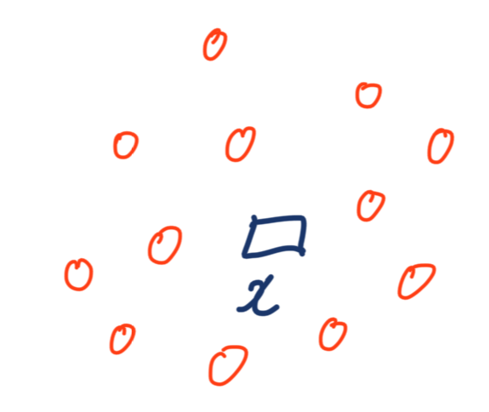
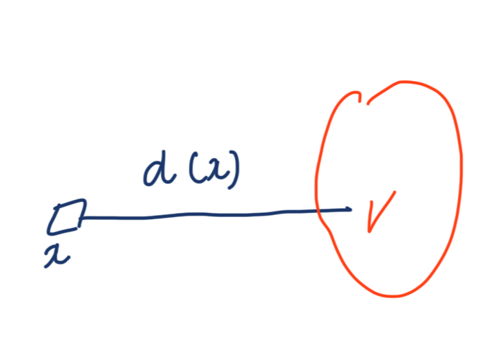
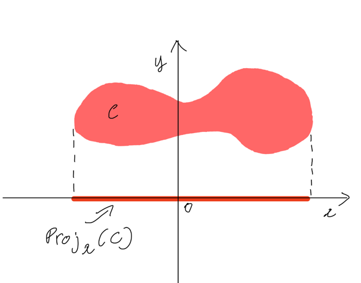

Linear Programming: Lập mô hình một số bài toán cơ bản
Posted: 14/07/2026
Ở các bài trước, mình đã giới thiệu Linear Programming (LP) là gì, cùng một số phương pháp giải cơ bản. Trong bài viết này, mình muốn tiếp cận theo hướng khác một chút. Thay vì tập trung vào phương pháp giải, ta sẽ tập trung vào cách lập mô hình (modeling). Tức là làm sao để chuyển một bài toán thực tế thành một mô hình toán học dưới dạng LP. Đây là một kỹ năng quan trọng trong tối ưu hóa. Thực tế, thách thức lớn nhất không nằm ở việc giải mô hình, mà nằm ở việc xây dựng một mô hình đúng và phản ánh chính xác bản chất của bài toán.
1. Bài toán production planning và định giá tồn kho nguyên vật liệu
1.1. Bài toán production planning
Hãy bắt đầu với bài toán production planning. Giả sử một công ty sản xuất nhiều loại sản phẩm khác nhau. Mỗi loại đều cần một số nguyên vật liệu nhất định để sản xuất. Ta có các thông tin sau:
- Công ty có $d$ loại sản phẩm khác nhau trong danh mục sản xuất, đánh số là sản phẩm 1, sản phẩm 2, và tiếp tục như vậy.
- Có $m$ loại nguyên vật liệu cần thiết để sản xuất các sản phẩm này, đánh số là nguyên liệu 1, nguyên liệu 2, và tiếp tục như vậy.
- Mỗi pc $j$ được bán với giá $p_j$, với $j \in [d]$.
- Lượng tồn kho hiện tại của nguyên liệu $i$ là $b_i$, với $i \in [m]$. Ta giả sử $b_i > 0$ với mọi $i$ (nếu $b_i=0$, mọi sản phẩm cần nguyên liệu $i$ đều không thể được sản xuất).
- Để sản xuất một pc $j$, cần $a_{ij}$ đơn vị nguyên liệu $i$, với mọi cặp $(i,j) \in [m] \times [d]$. Ở đây, $[m] \times [d]$ ký hiệu cho tập hợp $\{(i,j) : i \in [m], j \in [d]\}$.
- Ta giả sử toàn bộ dữ liệu đều không âm, tức $p_j \ge 0$, $b_i \ge 0$, và $a_{ij} \ge 0$ với mọi $i \in [m]$ và $j \in [d]$.
- Ta giả sử mỗi sản phẩm đều chia nhỏ được (divisible), nghĩa là lượng sản xuất có thể là bất kỳ số thực nào. Ví dụ, ta hoàn toàn có thể sản xuất 1,5 pcs sản phẩm 1
Với các thông tin trên, mục tiêu là xác định lượng sản xuất của mỗi sản phẩm. Dựa trên tồn kho nguyên liệu hiện có, sao cho tổng doanh thu (revenue) là lớn nhất. Ở đây, doanh thu là tổng thu nhập gộp thu được từ việc bán sản phẩm. Ta có thể giải quyết câu hỏi này bằng cách viết một mô hình LP. Hãy nhớ lại 3 thành phần của một bài toán ra quyết định: decisions, constraints, và objective.
- Decisions: gọi $x_j$ là lượng sản phẩm $j$ mà ta sản xuất, với $j \in [d]$.
- Objective: mục tiêu là tối đa hóa tổng doanh thu. Ở đây, tổng doanh thu được cho bởi $\sum_{j \in [d]} p_j x_j$.
- Constraints: tổng lượng tiêu thụ của nguyên liệu $i$ không được vượt quá tồn kho hiện có. Tổng lượng tiêu thụ là $\sum_{j \in [d]} a_{ij} x_j$. Vì tồn kho hiện tại của nguyên liệu $i$ là $b_i$, ta có thể viết constraint dưới dạng $\sum_{j \in [d]} a_{ij} x_j \le b_i$. Hơn nữa, ta biết rằng lượng sản xuất của mỗi sản phẩm không thể nhỏ hơn 0. Do đó, $x \ge 0$. Ở đây, $x \ge 0$ đơn giản có nghĩa là mọi thành phần của $x$ đều không âm.
Tổng hợp lại, bài toán production planning có thể được mô hình hóa thành:
$$ \begin{aligned} \max \quad & \sum_{j \in [d]} p_j x_j \\ \text{s.t.} \quad & \sum_{j \in [d]} a_{ij} x_j \le b_i, \quad i \in [m], \\ & x \ge 0. \end{aligned} $$Tiếp theo, hãy xét một mục tiêu khác. Giả sử mỗi đơn vị nguyên liệu $i$ tốn một chi phí là $s_i$, với $i \in [m]$. Lợi nhuận (profit) được định nghĩa là thu nhập ròng sau khi đã trừ chi phí khỏi doanh thu. Công ty có thể muốn tối đa hóa lợi nhuận, thay vì doanh thu. Vậy làm sao ta có thể mô hình hóa mục tiêu mới này?
Để ý rằng, sản xuất một pc $j$ sẽ tốn một khoản chi phí là $\sum_{i \in [m]} s_i a_{ij}$. Do đó, lợi nhuận thu được từ việc bán một pc $j$ là:
$$ p_j - \sum_{i \in [m]} s_i a_{ij} $$Khi đó, mục tiêu mới là tối đa hóa:
$$ \sum_{j \in [d]} \left( p_j - \sum_{i \in [m]} s_i a_{ij} \right) x_j $$LP tương ứng là:
$$ \begin{aligned} \max \quad & \sum_{j \in [d]} \left( p_j - \sum_{i \in [m]} s_i a_{ij} \right) x_j \\ \text{s.t.} \quad & \sum_{j \in [d]} a_{ij} x_j \le b_i, \quad i \in [m], \\ & x \ge 0. \end{aligned} $$1.2. Bài toán định giá tồn kho nguyên vật liệu (Inventory valuation problem)
Bây giờ, hãy xét một góc nhìn khác: thay vì sử dụng nguyên liệu để sản xuất, công ty có thể bán trực tiếp lượng nguyên liệu tồn kho ra ngoài thị trường. Giả sử giá thị trường của nguyên liệu $i$ là $r_i$ trên mỗi đơn vị. Khi đó, câu hỏi đặt ra là: giá trị hợp lý của mỗi đơn vị nguyên liệu nên được xác định như thế nào?
Câu hỏi này không đơn giản như việc lấy giá thị trường hiện tại. Bởi giá trị của nguyên liệu không chỉ nằm ở khả năng bán trực tiếp, mà còn nằm ở giá trị của các sản phẩm mà nó có thể tạo ra. Do đó, ta cần một cách định giá vừa nhất quán với thị trường, vừa phản ánh đúng tiềm năng sản xuất của nguồn nguyên liệu.
Gọi $\lambda_i$ là giá trị trên mỗi đơn vị nguyên liệu $i$ cần xác định. Đây chính là biến quyết định của bài toán. Để cách định giá này hợp lý, ta cần đảm bảo hai điều kiện.
Điều kiện thứ nhất: giá trị của nguyên liệu không thể thấp hơn giá bán trực tiếp trên thị trường. Vì công ty có thể lựa chọn bán nguyên liệu thay vì sử dụng nó cho sản xuất:
$$ \lambda_i \ge r_i, \quad i \in [m]. $$Điều kiện thứ hai: với mỗi sản phẩm $j$, tổng giá trị của các nguyên liệu cần thiết để sản xuất một pc $j$ phải không nhỏ hơn giá bán của sản phẩm đó. Nếu không, công ty có thể tạo ra sản phẩm để thu được giá trị cao hơn so với việc giữ nguyên liệu:
$$ \sum_{i \in [m]} a_{ij}\lambda_i \ge p_j, \quad j \in [d]. $$Hai điều kiện trên đảm bảo rằng cách định giá không mâu thuẫn với bất kỳ lựa chọn kinh tế nào của công ty. Trong số tất cả các cách định giá thỏa mãn hai điều kiện này, ta chọn cách có tổng giá trị kho nguyên liệu nhỏ nhất để thu được một mức định giá thận trọng nhất:
$$ \begin{aligned} \min_{\lambda}\quad & \sum_{i\in[m]} b_i\lambda_i\\ \text{s.t.}\quad & \sum_{i\in[m]} a_{ij}\lambda_i \ge p_j, \quad j\in[d],\\ & \lambda_i \ge r_i, \quad i\in[m]. \end{aligned} $$Nghiệm tối ưu $\lambda^*$ của bài toán này chính là cách định giá thấp nhất nhưng vẫn đảm bảo tính nhất quán với cả giá thị trường và giá trị sản xuất. Do đó, $\sum_i b_i\lambda_i^*$ biểu diễn một mức giá trị hợp lý cho toàn bộ kho nguyên liệu. Một điểm thú vị là mô hình này thực chất chính là bài toán dual (đối ngẫu) của bài toán production planning ban đầu. Khái niệm duality sẽ được trình bày chi tiết hơn trong bài viết tiếp theo.
2. Vậy bài toán nào có thể lập mô hình thành LP?
Câu hỏi tiếp theo là: có phải những bài toán có objective function và constraints hoàn toàn tuyến tính mới đưa được về LP hay không? Câu trả lời khá bất ngờ: không hẳn. Có nhiều bài toán nhìn qua tưởng phi tuyến, nhưng thực chất vẫn có thể viết lại thành một LP. Để thấy rõ điều này, hãy xét một ví dụ khác: bài toán tìm tâm của một cụm điểm.
Giả sử ta có một tập $n$ điểm dữ liệu $v^1, \dots, v^n \in \mathbb{R}^d$, tạo thành một cụm (cluster). Ta muốn tìm ra "tâm" của cụm này, tức một điểm $x$ sao cho khoảng cách từ $x$ đến toàn bộ $n$ điểm trong cụm là nhỏ nhất. Tùy vào cách ta định nghĩa "khoảng cách", kết quả tìm được có thể rất khác nhau.

Trước tiên, ta cần hai công cụ đo "độ lớn" của một vector, gọi là norm. Với một vector $x \in \mathbb{R}^d$, ta định nghĩa:
$$ \|x\|_1 = \sum_{j \in [d]} |x_j| \qquad \text{($\ell_1$-norm)} $$ $$ \|x\|_\infty = \max_{j \in [d]} |x_j| \qquad \text{($\ell_\infty$-norm)} $$Bài toán tìm tâm của cụm điểm, ứng với mỗi cách đo khoảng cách trên, chính là:
$$ \min_x \ d(x) $$Dựa trên hai norm này, ta có thể định nghĩa khoảng cách $d(x)$ từ một điểm $x$ đến toàn bộ tập $V$ theo 4 cách khác nhau:
- Tổng khoảng cách $\ell_1$: $d(x) = \sum_{i \in [n]} \|x - v^i\|_1$
- Tổng khoảng cách $\ell_\infty$: $d(x) = \sum_{i \in [n]} \|x - v^i\|_\infty$
- Khoảng cách $\ell_1$ xa nhất: $d(x) = \max_{i \in [n]} \|x - v^i\|_1$
- Khoảng cách $\ell_\infty$ xa nhất: $d(x) = \max_{i \in [n]} \|x - v^i\|_\infty$

Vì các hàm norm ở trên vốn không phải là hàm tuyến tính (do chứa giá trị tuyệt đối hoặc phép lấy giá trị lớn nhất), nhìn sơ qua cả bốn bài toán này dường như là các bài toán phi tuyến. Vậy liệu chúng ta có thể sử dụng LP để giải chúng hay không? Câu trả lời là có. Mặc dù biểu thức ban đầu không tuyến tính, mỗi bài toán vẫn có thể được biến đổi tương đương về dạng LP. Điểm mấu chốt nằm ở một khái niệm gọi là linearly representable function (tạm dịch: hàm có thể biểu diễn tuyến tính).
2.1. Epigraph: một cách nhìn khác về hàm số
Trước khi nói đến khái niệm trên, ta cần làm quen với một khái niệm gọi là epigraph. Cho một hàm số $f: \mathbb{R}^d \to \mathbb{R}$, epigraph của $f$ là tập tất cả các điểm nằm phía trên đồ thị của hàm số đó:
$$ \text{epi}(f) = \left\{ (x, t) \in \mathbb{R}^d \times \mathbb{R} : f(x) \le t \right\} $$Để dễ hình dung: nếu bạn vẽ đồ thị hàm $f$ lên mặt phẳng, thì epigraph chính là toàn bộ "vùng trời" phía trên đường cong đó (bao gồm cả chính đường cong). Khái niệm này nghe có vẻ trừu tượng, nhưng nó sẽ giúp ta có một cách rất gọn để nói "hàm này có phức tạp hay không", bằng cách nhìn vào hình dạng của vùng phía trên nó.
Ta nói một hàm $f$ là linearly representable nếu epigraph của nó có thể được biểu diễn hoàn toàn bằng một hệ hữu hạn các bất phương trình tuyến tính, tức là:
$$ \text{epi}(f) = \left\{ (x,t) \in \mathbb{R}^d \times \mathbb{R} : \exists\, y \in \mathbb{R}^p \text{ sao cho } Ax + Dy + ht \le r \right\} $$với một số ma trận $A, D$ và vector $h, r$ phù hợp. Ở đây, các biến $y$ được gọi là biến phụ trợ (auxiliary variables). Ý tưởng cốt lõi là: dù bản thân hàm $f$ không tuyến tính, ta vẫn có thể "vẽ" đúng hình dạng vùng phía trên nó chỉ bằng các đường thẳng, miễn là ta cho phép mượn thêm vài biến phụ để hỗ trợ.
2.2. Vì sao điều này quan trọng?
Giả sử ta muốn tối thiểu hóa $f(x)$. Thay vì tối ưu trực tiếp trên $f(x)$, ta đưa vào một biến phụ $t$, và tối thiểu hóa $t$ với ràng buộc thêm là $f(x) \le t$. Hai bài toán này hoàn toàn tương đương nhau, chỉ khác là bài toán mới có dạng "đẹp" hơn để làm việc. Nếu $f$ là linearly representable, ràng buộc $f(x) \le t$ (tức điều kiện $(x,t) \in \text{epi}(f)$) có thể thay bằng một hệ bất phương trình tuyến tính, có thêm một vài biến phụ trợ. Áp dụng tương tự cho từng constraint function, cuối cùng ta thu được một bài toán hoàn toàn tuyến tính, dù bài toán gốc nhìn qua không hề như vậy.
Mọi hàm tuyến tính đều là linearly representable (vì bản thân nó đã là một bất phương trình tuyến tính rồi, không cần biến phụ nào cả). Nhưng như ví dụ dưới đây cho thấy, có rất nhiều hàm phi tuyến vẫn là linearly representable.
Ví dụ. Xét hàm $f(x_1, x_2, x_3) = \max\{x_1,\ 2x_2 + x_3,\ 2x_3 - x_1\}$. Nhìn qua, đây rõ ràng là một hàm phi tuyến vì có phép lấy max. Epigraph của nó là:
$$ \left\{(x_1, x_2, x_3, t) : \max\{x_1,\ 2x_2 + x_3,\ 2x_3 - x_1\} \le t \right\} $$Nhưng để ý rằng, điều kiện "giá trị lớn nhất trong 3 số không vượt quá $t$" hoàn toàn tương đương với việc cả 3 số đó đều không vượt quá $t$. Tức là:
$$ x_1 \le t, \qquad 2x_2 + x_3 \le t, \qquad 2x_3 - x_1 \le t $$Vậy nên:
$$ \text{epi}(f) = \{(x_1, x_2, x_3, t) : x_1 \le t,\ 2x_2 + x_3 \le t,\ 2x_3 - x_1 \le t\} $$Đây là một hệ hữu hạn các bất phương trình tuyến tính, không cần đến bất kỳ biến phụ trợ nào cả. Vậy $f$ là linearly representable, dù bản thân nó không phải là hàm tuyến tính. Đây chính xác là "mẹo" đứng sau việc 4 bài toán tìm tâm cụm điểm ở trên đều có thể viết lại thành LP: phép lấy max và dấu giá trị tuyệt đối, tuy trông có vẻ phi tuyến, nhưng đều có thể "tháo rời" thành một tập hợp các bất phương trình tuyến tính đơn giản hơn.
2.3. Vậy biến phụ trợ $y$ thực chất là gì?
Ở phần trước, khi định nghĩa linearly representable, mình có nhắc đến các "biến phụ trợ" (auxiliary variables) $y$ mà ta được phép mượn thêm để biểu diễn epigraph bằng các bất phương trình tuyến tính. Nhưng $y$ thực sự đóng vai trò gì? Để trả lời câu hỏi này, ta cần làm quen với một khái niệm gọi là projection (phép chiếu).
Cho một tập $C \subseteq \mathbb{R}^d \times \mathbb{R}^p$, tức mỗi điểm trong $C$ được viết dưới dạng $(x, y)$ với $x \in \mathbb{R}^d$ và $y \in \mathbb{R}^p$. Phép chiếu của $C$ xuống không gian của $x$ được định nghĩa là:
$$ \text{proj}_x(C) = \left\{ x \in \mathbb{R}^d : \exists\, y \in \mathbb{R}^p \text{ sao cho } (x,y) \in C \right\} $$Nói dễ hiểu hơn: hãy tưởng tượng $C$ là một cái bóng đổ trong không gian $(x, y)$. Phép chiếu $\text{proj}_x(C)$ chính là "cái bóng" của $C$ khi ta chiếu nó thẳng xuống trục $x$, bỏ hẳn chiều $y$ đi. Người ta cũng hay gọi thao tác này là "chiếu bỏ" (project out) biến $y$.

Quay lại với epigraph, nếu ta xét tập:
$$ P = \left\{(x, y, t) \in \mathbb{R}^d \times \mathbb{R}^p \times \mathbb{R} : Ax + Dy + ht \le r \right\} $$thì $\text{epi}(f)$ chính xác là phép chiếu của $P$ xuống không gian $(x, t)$. Nói cách khác, ý nghĩa thật sự của biến phụ trợ $y$ là: dù $\text{epi}(f)$ tự nó có hình dạng phức tạp, cong queo, không thể mô tả chỉ bằng các bất phương trình tuyến tính trên $(x,t)$, ta vẫn có thể "nhét" nó vào một không gian nhiều chiều hơn (thêm chiều $y$), sao cho trong không gian lớn hơn đó, hình dạng của nó lại trở nên đơn giản, chỉ là một tập được tạo bởi các mặt phẳng. Sau đó, ta chỉ cần chiếu ngược nó về lại không gian $(x,t)$ ban đầu để lấy đúng epigraph mình cần. Đây là một mẹo rất hay gặp trong tối ưu hóa: đôi khi, một bài toán trông phức tạp ở không gian ít chiều lại trở nên đơn giản hơn hẳn nếu ta chịu khó "nới" thêm vài chiều phụ.
2.4. Một số hàm linearly representable thường gặp
Với nền tảng đó, giờ ta có thể quay lại "trả nợ" cho 4 bài toán tìm tâm cụm điểm ở phần 2 mà mình chưa chứng minh chi tiết. Dưới đây là epigraph của một vài hàm rất hay gặp.
Trị tuyệt đối. Với $f(x) = |x|$, $x \in \mathbb{R}$, ta để ý rằng $|x| \le t$ khi và chỉ khi $-t \le x \le t$. Do đó:
$$ \text{epi}(f) = \{(x,t) \in \mathbb{R} \times \mathbb{R} : -t \le x \le t\} $$Không cần biến phụ trợ nào cả, hàm trị tuyệt đối đã là linearly representable rồi.
Hàm tuyến tính từng khúc lồi (convex piecewise linear). Đây chính là dạng tổng quát của ví dụ $\max\{x_1, 2x_2+x_3, 2x_3-x_1\}$ mà mình đã làm ở phần trước. Với $f(x) = \max_{i \in [n]} (c_i^\top x + d_i)$, lý luận hoàn toàn tương tự: giá trị lớn nhất trong $n$ hàm tuyến tính không vượt quá $t$ khi và chỉ khi từng hàm một không vượt quá $t$. Vậy:
$$ \text{epi}(f) = \left\{(x,t) \in \mathbb{R}^d \times \mathbb{R} : c_i^\top x + d_i \le t,\ \forall i \in [n]\right\} $$$\ell_1$-norm. Với $f(x) = \|x\|_1 = \sum_{j \in [d]} |x_j|$, lần này ta thực sự cần đến biến phụ trợ. Để ý rằng $\|x\|_1 \le t$ khi và chỉ khi tồn tại $s_1, \dots, s_d \in \mathbb{R}$ sao cho:
$$ |x_j| \le s_j,\ \forall j \in [d], \qquad \sum_{j \in [d]} s_j \le t $$tức mỗi $s_j$ đóng vai trò như một "chặn trên" cho $|x_j|$, và tổng các chặn trên này không vượt quá $t$. Viết lại điều kiện $|x_j| \le s_j$ dưới dạng tuyến tính (giống hệt trường hợp trị tuyệt đối ở trên), ta có:
$$ -s_j \le x_j \le s_j,\ \forall j \in [d], \qquad \sum_{j \in [d]} s_j \le t $$Đây hoàn toàn là một hệ bất phương trình tuyến tính trên $(x, s, t)$, với $s$ đóng vai trò biến phụ trợ. Vậy $\ell_1$-norm là linearly representable.
$\ell_\infty$-norm. Với $f(x) = \|x\|_\infty = \max_{j \in [d]} |x_j|$, ta để ý $\|x\|_\infty \le t$ khi và chỉ khi $|x_j| \le t$ với mọi $j$, tương đương với:
$$ -t \le x_j \le t,\ \forall j \in [d] $$Lần này thậm chí không cần biến phụ trợ nào. Vậy cả hai hàm norm mà ta dùng để định nghĩa 4 bài toán tìm tâm cụm điểm ở phần trước đều đã được chứng minh là linearly representable.
2.5. Kết hợp các hàm linearly representable với nhau
Một tin vui nữa: tính linearly representable không chỉ dừng lại ở từng hàm riêng lẻ, mà còn được bảo toàn qua một số phép toán. Cụ thể, nếu $f_1(x), \dots, f_n(x)$ đều là linearly representable, thì:
- Với các hệ số không âm $\alpha_1, \dots, \alpha_n$ bất kỳ, tổng có trọng số $f(x) = \sum_{i \in [n]} \alpha_i f_i(x)$ cũng là linearly representable.
- Hàm lấy giá trị lớn nhất theo từng điểm, $f(x) = \max_{i \in [n]} f_i(x)$, cũng là linearly representable.
Ý tưởng đứng sau cả hai trường hợp khá giống nhau và khá trực quan. Với trường hợp thứ hai (lấy max), ta chỉ cần để ý: $\max_i f_i(x) \le t$ khi và chỉ khi $f_i(x) \le t$ với mọi $i$, tức $(x,t) \in \text{epi}(f_i)$ với mọi $i$. Do mỗi $\text{epi}(f_i)$ đã là một tập được tạo bởi hữu hạn bất phương trình tuyến tính, phép giao của chúng cũng vậy. Với trường hợp thứ nhất (tổng có trọng số), ta lại dùng đúng "mẹo" biến phụ trợ: đưa vào các biến $s_i$ đóng vai trò chặn trên cho từng $f_i(x)$, sao cho $f_i(x) \le s_i$ và $\sum_i \alpha_i s_i \le t$, y hệt cách ta đã làm với $\ell_1$-norm ở trên.
Nhờ hai phép toán "lắp ráp" này, ta có một bộ công cụ khá mạnh: bắt đầu từ vài hàm cơ bản (tuyến tính, trị tuyệt đối, norm), ta có thể tổ hợp chúng theo rất nhiều cách (cộng có trọng số, lấy max) mà vẫn giữ được tính linearly representable, tức vẫn đưa được về LP. Ở phần tiếp theo, ta sẽ thấy bộ công cụ này hữu dụng đến mức nào qua một bài toán thực tế phức tạp hơn nhiều so với những gì ta đã gặp.
3. Bài toán sản xuất có tính đến chi phí lưu kho
Quay lại bài toán production planning ban đầu, nhưng lần này thêm một chi tiết thực tế hơn: chi phí lưu kho (holding cost). Giả sử công ty vẫn có $d$ loại sản phẩm và $m$ loại nguyên vật liệu như trước, với các thông tin quen thuộc: giá bán $p_j$, tồn kho nguyên liệu $b_i$, và định mức nguyên liệu $a_{ij}$. Nhưng lần này, mỗi sản phẩm $j$ còn có thêm:
- Một mức nhu cầu (demand) xác định trước là $d_j$, tức công ty chỉ có thể bán tối đa $d_j$ pcs $j$, dù có sản xuất nhiều hơn.
- Nếu công ty sản xuất nhiều hơn $d_j$ đơn vị, phần dư ra phải tốn chi phí lưu kho $c_j$ trên mỗi đơn vị dư.
- Nếu công ty sản xuất ít hơn $d_j$ đơn vị, phần nhu cầu chưa đáp ứng được sẽ bị phạt $h_j$ trên mỗi đơn vị thiếu hụt.
Ta vẫn dùng $x_j$ là lượng sản phẩm $j$ cần sản xuất, và các ràng buộc về nguyên liệu vẫn giữ nguyên như bài toán gốc:
$$ \sum_{j \in [d]} a_{ij} x_j \le b_i, \quad \forall i \in [m], \qquad x_j \ge 0, \ \forall j \in [d] $$Điều thú vị nằm ở objective function. Ta cần xét 2 trường hợp cho mỗi sản phẩm $j$:
Trường hợp 1: $x_j \ge d_j$ (sản xuất dư). Công ty chỉ bán được đúng $d_j$ đơn vị, phần dư $x_j - d_j$ phải chịu chi phí lưu kho. Lợi nhuận từ sản phẩm $j$ lúc này là:
$$ \underbrace{p_j d_j}_{\text{bán tối đa } d_j} - \underbrace{c_j (x_j - d_j)}_{\text{chi phí lưu kho}} = -c_j x_j + (p_j + c_j) d_j $$Trường hợp 2: $x_j < d_j$ (sản xuất thiếu). Công ty bán hết toàn bộ $x_j$ đơn vị đã sản xuất, không tốn chi phí lưu kho, nhưng phải chịu phạt cho phần nhu cầu chưa đáp ứng. Lợi nhuận từ sản phẩm $j$ lúc này là:
$$ \underbrace{p_j x_j}_{\text{bán hết } x_j} - \underbrace{h_j (d_j - x_j)}_{\text{chi phí phạt}} = (p_j + h_j) x_j - h_j d_j $$Nếu vẽ đồ thị lợi nhuận theo $x_j$, ta sẽ thấy một đường gấp khúc: lợi nhuận tăng dần với tốc độ $(p_j + h_j)$ khi $x_j$ còn nhỏ hơn $d_j$ (mỗi đơn vị sản xuất thêm vừa bán được vừa tránh được tiền phạt), nhưng ngay khi $x_j$ vượt qua $d_j$, lợi nhuận bắt đầu giảm dần với tốc độ $c_j$ (mỗi đơn vị dư ra chỉ tổ tốn thêm chi phí lưu kho mà không bán được). Đỉnh của đường gấp khúc này chính xác là tại $x_j = d_j$, và tại đó, giá trị của cả 2 công thức bên trên đều bằng nhau. Nói cách khác, hàm lợi nhuận cho sản phẩm $j$ chính là:
$$ \min\left\{ -c_j x_j + (p_j + c_j) d_j,\ \ (p_j + h_j) x_j - h_j d_j \right\} $$Lấy giá trị nhỏ hơn trong 2 công thức nghe có vẻ ngược đời (ta đang muốn tối đa hóa lợi nhuận cơ mà?), nhưng thực ra rất hợp lý: hãy để ý rằng công thức thứ nhất (trường hợp dư) chỉ đúng khi $x_j \ge d_j$, và lúc đó nó luôn nhỏ hơn hoặc bằng công thức thứ hai; ngược lại, khi $x_j < d_j$, công thức thứ hai mới đúng và nó nhỏ hơn công thức thứ nhất. Việc lấy $\min$ của cả hai chính là cách "tự động chọn đúng công thức" tương ứng với từng trường hợp, mà không cần phải viết riêng biệt ràng buộc if-else. Đây là một mẹo mô hình hóa rất hay, và ta sẽ còn gặp lại nó nhiều lần sau này.
Vậy, tổng lợi nhuận công ty muốn tối đa hóa là tổng lợi nhuận của tất cả các sản phẩm:
$$ f(x) = \sum_{j \in [d]} \min\left\{ -c_j x_j + (p_j + c_j) d_j,\ (p_j + h_j) x_j - h_j d_j \right\} $$Và bài toán tối ưu hoàn chỉnh là:
$$ \begin{aligned} \max_x \quad & \sum_{j \in [d]} \min\left\{ -c_j x_j + (p_j + c_j) d_j,\ (p_j + h_j) x_j - h_j d_j \right\} \\ \text{s.t.} \quad & \sum_{j \in [d]} a_{ij} x_j \le b_i, \quad \forall i \in [m], \\ & x_j \ge 0, \quad \forall j \in [d] \end{aligned} $$Nhìn objective function, ta thấy nó là tổng của các hàm $\min$ giữa hai hàm tuyến tính, trông có vẻ khá phức tạp và chắc chắn không tuyến tính. Nhưng đây chính lúc bộ công cụ linearly representable mà ta xây dựng ở phần 2 phát huy tác dụng.
Đưa bài toán về dạng Linear Programming
Trước tiên, ta đổi bài toán maximization trên thành minimization tương đương (đổi dấu objective):
$$ \begin{aligned} \min_x \quad & \sum_{j \in [d]} \max\left\{ c_j x_j - (p_j + c_j) d_j,\ -(p_j + h_j) x_j + h_j d_j \right\} \\ \text{s.t.} \quad & \sum_{j \in [d]} a_{ij} x_j \le b_i, \quad \forall i \in [m], \\ & x_j \ge 0, \quad \forall j \in [d] \end{aligned} $$(lưu ý: đổi $\min$ thành $\max$ của các hàm đối dấu bên trong, đây chỉ là một phép biến đổi đại số đơn giản). Giờ thì objective chính là tổng của các hàm "tuyến tính từng khúc lồi" mà ta đã chứng minh là linearly representable ở phần 2.4. Áp dụng đúng kỹ thuật ở đó (thêm biến phụ trợ $s_j$ đóng vai trò chặn trên cho từng số hạng, và biến $t$ đóng vai trò chặn trên cho cả tổng), ta thu được:
$$ \begin{aligned} \min \quad & t \\ \text{s.t.} \quad & \sum_{j \in [d]} s_j \le t, \\ & c_j x_j - (p_j + c_j) d_j \le s_j, \quad \forall j \in [d], \\ & -(p_j + h_j) x_j + h_j d_j \le s_j, \quad \forall j \in [d], \\ & \sum_{j \in [d]} a_{ij} x_j \le b_i, \quad \forall i \in [m], \\ & x_j \ge 0, \quad \forall j \in [d] \end{aligned} $$Đây chính xác là một LP hoàn chỉnh: objective chỉ còn là biến $t$ đơn giản, và mọi ràng buộc đều là bất phương trình tuyến tính trên các biến $(x, s, t)$. Không còn dấu $\min$ hay $\max$ nào sót lại cả.
Có một cách tiếp cận thứ hai, trực tiếp hơn, không cần đổi bài toán sang dạng minimization trước. Ta để ý: tối đa hóa $f(x)$ tương đương với việc tối đa hóa một biến phụ trợ $t$, với ràng buộc $f(x) \ge t$ (ngược dấu so với cách làm quen thuộc $f(x) \le t$, vì đây là maximization). Lý luận tương tự như trước (chỉ đảo chiều bất đẳng thức), ta thu được một mô hình khác:
$$ \begin{aligned} \max \quad & t \\ \text{s.t.} \quad & t \le \sum_{j \in [d]} s_j, \\ & s_j \le -c_j x_j + (p_j + c_j) d_j, \quad \forall j \in [d], \\ & s_j \le (p_j + h_j) x_j - h_j d_j, \quad \forall j \in [d], \\ & \sum_{j \in [d]} a_{ij} x_j \le b_i, \quad \forall i \in [m], \\ & x_j \ge 0, \quad \forall j \in [d] \end{aligned} $$Hai mô hình này thực ra hoàn toàn tương đương nhau, chỉ khác nhau ở cách đặt tên biến (đổi $t \to -t$ và $s_j \to -s_j$ sẽ biến mô hình này thành mô hình kia). Điều thú vị là: dù xuất phát từ hai hướng suy luận khác nhau (một hướng đi qua bước đổi sang minimization trước, một hướng làm trực tiếp trên maximization), ta vẫn đi đến cùng một bản chất toán học. Trong việc lập mô hình, thường có nhiều con đường khác nhau dẫn đến cùng một đích. Việc thử nhiều cách tiếp cận đôi khi giúp ta hiểu bài toán sâu hơn.
Kết lại
Nhìn lại, cả ba phần trong bài viết này thực chất đều xoay quanh một chủ đề chung: làm thế nào để xây dựng mô hình cho một bài toán thực tế, kể cả khi bài toán ban đầu không phải là tuyến tính. Ở bài toán định giá tồn kho, ta thấy cách chuyển một câu hỏi khá trừu tượng ("nguyên liệu này đáng giá bao nhiêu?") thành một mô hình LP rất cụ thể, chỉ bằng cách suy luận từ những lựa chọn hợp lý mà công ty có thể đưa ra.
Ở phần thứ hai, ta nhận ra rằng ranh giới giữa "tuyến tính" và "phi tuyến" không phải lúc nào cũng rõ ràng. hiều hàm nhìn có vẻ phi tuyến, ẫn có thể được biểu diễn dưới dạng LP thông qua việc đưa vào các biến phụ trợ phù hợp. Khái niệm epigraph và phép chiếu (projection) cho ta một cách nhìn khá thú vị: một hàm trông phức tạp ở không gian ít chiều đôi khi lại trở nên đơn giản hơn hẳn nếu ta chịu "nới" thêm vài chiều phụ. Nhờ hai phép toán cơ bản là cộng có trọng số và lấy giá trị lớn nhất, ta có thể kết hợp các hàm đơn giản này để xây dựng những hàm phức tạp hơn, trong khi vẫn duy trì được tính linearly representable.
Đến phần thứ ba, ta thấy những ý tưởng trên không chỉ mang tính lý thuyết. Một bài toán sản xuất có xét đến chi phí lưu kho, với objective function chứa cả phép $\min$ và $\max$ của các hàm tuyến tính, vẫn có thể được mô hình hóa bằng LP nhờ các quy tắc của linearly representable function. Đây cũng là một bài học quan trọng trong modeling: những khái niệm có vẻ trừu tượng như epigraph không chỉ tồn tại để phục vụ lý thuyết, mà chính là công cụ giúp giải quyết các bài toán thực tế phức tạp hơn.
Trong các bài viết tiếp theo, mình sẽ tiếp tục chuỗi bài về modeling với một số mô hình kinh điển khác như bài toán vận tải và bài toán phân công công việc. Đồng thời, mình sẽ quay lại chủ đề duality đã được nhắc đến ở phần đầu, bởi đây là một trong những khái niệm quan trọng và có nhiều ý nghĩa nhất trong Linear Programming.